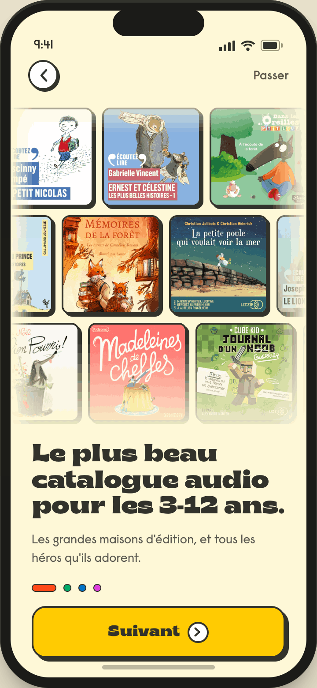
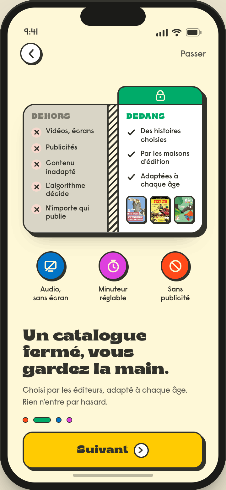
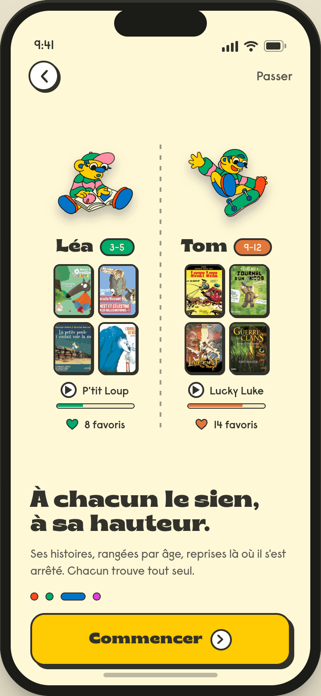
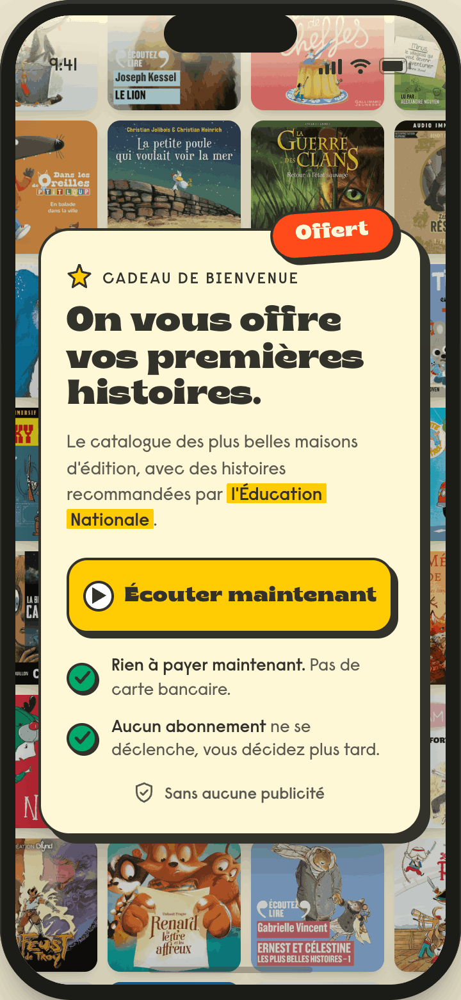

Mission Kidsono · Onboarding · Les écrans, par famille
Les écrans de l'onboarding Kidsono, et le pourquoi de chaque choix
Le parcours déroulé écran par écran (défilement horizontal), regroupé par famille. Pour chaque écran, les points importants : ce qu'on a mis et pourquoi, issu des benchmarks et des propositions de la mission. Cliquez sur un écran pour le voir en grand. Les visuels sont les rendus Claude Design ; les écrans encore en production apparaissent comme "à venir".
Les familles d'écrans
Lancement
Proposition de valeur
Autorité
Offre gratuite
Création de compte
Profil et personnalisation
Conversion (paywall)
● Lancement
À venirrendu Claude Design

01 · Splash
Logo seul
- UX : un seul signe et du vide, le restraint fait le premium (convergent chez Noom, Aumio, Storytel)
- Psycho : on ne vend rien ici, vendre avant d'avoir posé la marque fait fuir
- Rythme : splash volontairement au plus bas pour réserver le pic de couleur au claim (montée du désir)
À venirrendu Claude Design

02 · Accroche
Le 1er pic
- Positionnement : la signature "Du bon son pour bien grandir" dit qui on est, au lieu d'un superlatif vide non prouvable ("la meilleure app")
- Psycho : le pic émotionnel coloré ancre la marque par l'émotion avant toute demande
- UX : le carrefour "Déjà un compte ?" évite le mur "tu n'es pas connecté" qui bloquait les revenants
● Proposition de valeur · le carrousel
À venirrendu Claude Design

03 · Valeur A
Le catalogue
- Psycho : on montre les vraies couvertures plutôt que de promettre, la preuve visuelle convainc plus qu'un discours
- Business : les éditeurs reconnaissables = la caution empruntée, seul actif de notoriété d'une marque inconnue
À venirrendu Claude Design

04 · Valeur B
Catalogue fermé
- Psycho : la frontière Dehors/Dedans répond à l'angoisse n°1 du parent (écrans, algo, contenu inadapté) en opposant un jardin tenu
- Business : la sécurité justifie de payer face au gratuit (Gulli/Okoo) et au bazar (Spotify)
À venirrendu Claude Design

05 · Valeur C
À chacun le sien
- Rétention : un profil par enfant (reprise + favoris), la personnalisation crée l'attachement et le réusage
- Business : l'argument multi-enfants ("chacun le sien") justifie un quota d'heures plus élevé
● Autorité
À venirrendu Claude Design

06 · Autorité
Le mur des éditeurs
- Confiance : la masse de logos éditeurs fait caution, au moment précis où une marque inconnue doit prouver sa légitimité
- Rythme : le fond vert (changement de couleur) signale ce beat de preuve, sans répéter le carrousel
- Business : on emprunte la notoriété des éditeurs faute de notoriété propre
● Offre gratuite
À venirrendu Claude Design

07 · Offre gratuite
~30 min offertes
- Conversion : "la preuve, paiement direct", faire écouter gratuitement désamorce le risque perçu avant de demander de payer
- Psycho : "sans carte, rien ne se déclenche" lève l'anxiété du piège à abonnement, ce qui augmente l'engagement
- Business : l'heure offerte est aux frais de Kidsono, un coût d'acquisition assumé pour amorcer l'habitude
● Création de compte
À venirrendu Claude Design

08 · Compte
Création de compte
- Friction : Apple/Google = 1 tap au lieu de saisir un email et attendre, moins d'abandon au moment-clé du déblocage
- Standard : le SSO est absent du segment FR enfant, l'ajouter place Kidsono au-dessus du marché local
- UX : écran gardé léger (pas de logo redondant avec l'illustration) pour ne pas alourdir l'inscription
À venirrendu Claude Design

09 · Compte
Saisie du code
- Compréhension : on garde le mot "lien magique" que les gens connaissent, même si techniquement c'est un code, le wording prime sur l'exactitude
- Tech : le système de code existant est conservé pour ne pas charger le CTO (réalignement visuel à la DA plus tard)
● Profil et personnalisation
À venirrendu Claude Design

10 · Profil
Profil et perso.
- UX : la perso vient APRÈS le compte, configurer l'enfant une fois connecté évite de bloquer l'entrée
- Rétention : un profil par enfant prépare des recommandations à sa hauteur (réusage)
- Friction : multi-profil optionnel (skippable) pour ne pas alourdir l'inscription
Écoute gratuite (~30 min), répartie sur plusieurs jours.
▼ Ce qui déclenche le paywall (l'un de ces cas)
⏱ Le quota d'heures gratuites est épuisé
⏸ L'enfant est arrêté en plein milieu d'une histoire
▶ Un clic sur "Lecture" alors qu'il n'y a plus de quota
● Conversion · le paywall (fermable → accès limité)
À venirrendu Claude Design

11 · Paywall
La valeur (le pic)
- Psycho : le mur de couvertures matérialise la perte ("voilà ce que vous ratez"), levier d'aversion à la perte au moment de décider
- Confiance : autorité + Éducation nationale ici, le signal de confiance a son effet maximal à l'instant de payer
- Rythme : 2e pic visuel (pic en haut, prix au calme en bas), un paywall doit "péter" sans noyer les prix
À venirrendu Claude Design

12 · Paywall
Choix du palier
- Décision : formules nommées par l'usage ("pour la maison") pour aider le parent à se projeter plutôt qu'à calculer des heures
- Conversion : la formule recommandée présélectionnée sert d'ancrage, on guide sans forcer
- Confiance : les 3 garanties juste avant le paiement, la réassurance culmine à l'instant de sortir la carte
À venirrendu Claude Design

13 · Paywall
Modale Apple
- Friction : le CTA ouvre direct la modale native, pas d'écran de confirmation maison, chaque écran en plus = de l'abandon
- Confiance : paiement géré par Apple, pas de carte saisie dans l'app, résiliation centralisée
👑 S'abonneAccès complet à tout le catalogue
✕ Ferme ou refuse (n'importe quel écran du paywall)Accès limité : extraits uniquement
↺ Depuis l'accès limité, un clic sur "Lecture" rouvre le paywall
← défiler horizontalement · cliquer un écran pour l'agrandir →
Document de présentation, mission conseil Kidsono. Les visuels sont les rendus Claude Design (déposés au fil de l'eau dans le dossier ecrans-finaux-claude-design). Les annotations résument le pourquoi de chaque choix, fondé sur les benchmarks (splash, claim, autorité, réassurance, création de compte, paywall) et les propositions validées en réunion.